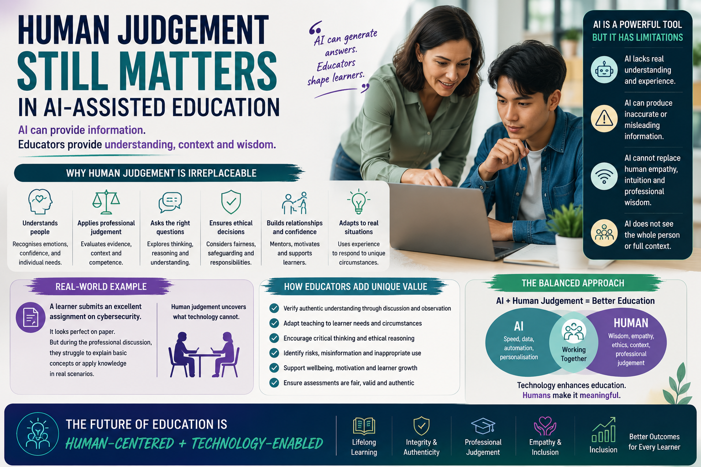

AI can provide information and automate processes, but authentic education still depends on human understanding, professional judgement, ethical reasoning, and real-world educational experience.

Artificial Intelligence is rapidly becoming part of modern education. Across schools, colleges, universities, and vocational training environments, AI-powered systems such as ChatGPT, Microsoft Copilot, and Gemini are increasingly being used to support lesson planning, learner research, accessibility, assessment preparation, and administrative tasks.
At the same time, learners are using AI tools daily to summarise information, improve written work, generate revision materials, explain difficult concepts, and support independent study.
One of the biggest misconceptions surrounding AI is the assumption that education is simply about providing information. Effective education requires understanding people, recognising individual learner needs, adapting communication styles, evaluating competence, supporting confidence, and applying professional judgement in complex situations.
A learner may submit an assignment that appears academically strong and professionally written. However, during professional discussion or practical assessment, the same learner may struggle to explain key concepts, apply knowledge practically, justify decisions, or demonstrate occupational competence in realistic scenarios.
This is where human judgement becomes essential.
Experienced educators, assessors, and IQAs possess contextual understanding that AI systems currently cannot replicate effectively. They understand learner behaviour, communication patterns, confidence levels, safeguarding concerns, workplace expectations, and practical application of knowledge.
The future of education is unlikely to involve AI replacing educators entirely. Instead, the future will likely involve collaboration between AI systems and educational professionals.
AI may assist with information delivery and administrative support, but educators will continue to play a critical role in mentoring learners, evaluating competence, supporting wellbeing, encouraging critical thinking, and maintaining educational integrity.
Artificial Intelligence may continue transforming how education is delivered and supported, but human judgement remains essential in ensuring that learning remains authentic, meaningful, fair, and professionally relevant.
Technology may enhance education, but it is still people who guide, inspire, evaluate, and shape the learning journey itself.